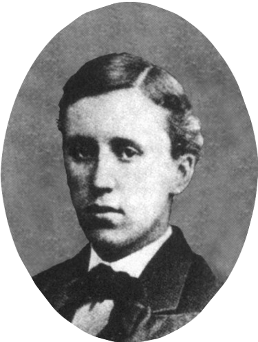
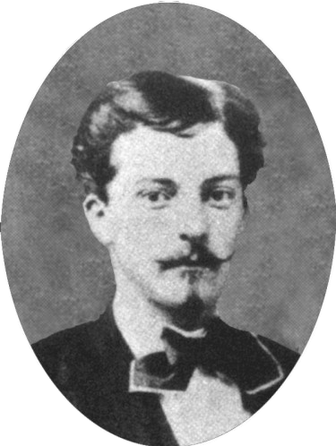
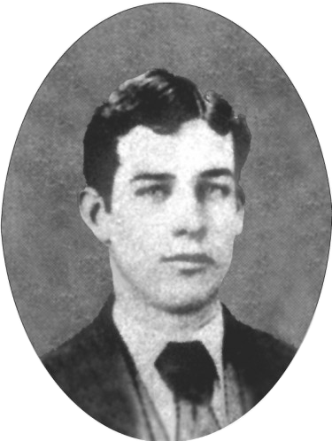
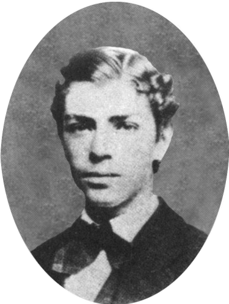

NATIONAL HISTORY
Modern day Kappa Sigma was founded one chilly evening in the fall of 1869, as five students attending the University of Virginia in Charlottesville gathered in the room of William Grigsby McCormick, at 46 East Lawn, and planted the seed of brotherhood. For many weeks the bonds of friendship had drawn these five together; now the need became clear for a formal structure to contain their feelings. Thus, not only did the Founders formalize their friendship, but they also created a fraternity steeped in the traditions of the past and dedicated to the pursuit of learning. The new brothers recorded their bond in a Constitution and in an Oath that set forth the ideals and principles to all Kappa Sigmas today.
THE FOUNDING FATHERS OF KAPPA SIGMA





|
William Grisby Mccormick George Miles Arnold Edmund Law Rogers Frank Courtney Nicodemus John Covert Boyd |
William Grigsby McCormick was born June 3, 1851 in Chicago. His father was William Sanderson McCormick (1815 through 1865) and mother was Mary Ann Grigsby (1828 through 1878) of the Hickory Hill estate in Virginia. His father managed finances for the family agricultural machinery business which became International Harvester until he died in an insane asylum in 1865. His mother then moved the family back to Baltimore, Maryland near her Virginia family estate. He attended the University of Virginia in 1868 and 1869, where he founded the Kappa Sigma Fraternity with four other friends on December 10, 1869. A plaque was later affixed to his 1869 room, which was numbered 46 East Lawn, where the first Kappa Sigma meeting was held.
George Miles Arnold was born August 27, 1851, in Troy, New York and was raised in Mobile, Alabama. He entered the University of Virginia in 1869, his chief studies being Latin, French and mathematics. His facility for languages led his friends to call him "the little Spaniard" The first Grand Master of the Zeta Chapter, he began a course in medicine at the University in 1870 but withdrew from Virginia in Feburary 1871 , to enter the Medical College of New York where he completed his medical education. His medical degree was not conferred upon until a year after finishing as he was too young at the time. Dr. Arnold had a busy, but short medical career. On January 25, 1890, he died from pneumonia.
Edmund Law Rogers was born July 1, 1850, in Baltimore, Maryland to a prominent Maryland family. The family estate, Druid Hill, today is one of the largest city parks in North America. Rogers prepared for college at the James Kinner Academy in Baltimore, where founder Frank Courtney Nicodemus was one of his classmates. As with George Miles Arnold, Rogers entered the University of Virginia as a first-year student in 1869. He succeed Arnold as Grand Master of Zeta Chapter. Rogers studied architecture and also developed an interest in acting. His graphic talent is apparent in the badge of Kappa Sigma Fraternity, which Rogers designed. Rogers died December 19, 1893; he was buried in Baltimore, Maryland in the Buchanan and Rogers burial ground in Druid Hill.
Frank Courtney Nicodemus was born January 8, 1853. He was a lifelong resident of Baltimore. Before entering the University of Virginia, he was a student at Kinnier Academy. Nicodemua ls left the University of Virginia in the spring of 1870 to join his father's business where he became a partner four years later. In 1875, Nicodemus and his father formed the investment and brokeage firm of J.C Nicodemus & son. Four years later, Nicodemus formed the firm of F. C. Nicodemus & Co., a manufacturer of boilers, engines and machinery. In 1885, Nicodemus became the treasurer of the Baltimore post Maryland of the Connecticut Mutual Life Insurance Company which he continued in until his death on May 25, 1919.
John Covert Boyd was born on 24 December 1850 near Bradford Springs, South Carolina. From 1869 to 1871, he attended the University of Virginia. After Boyd's second year, in which he entered the medical program, he transferred to the University of the City of New York. After graduating as a Doctor of Medicine, Boyd was appointed as an assistant surgeon in the Navy medical corp, eventually rising to the rank of Medical Director. In 1902, he became a professor in the Navy Medical College, Washington, where he was second in seniority. Under supervision of the Surgeon-General of the Navy, Boyd compiled a book of instructions for medical officers. In 1905, President Roosevelt appointed Boyd to be one of the members of the Board of Incorporators of the American Red Cross. He died on 7 July 1927 and is buried in Arlington National Cemetery.